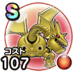

メカバーン
ほこらこころ最大コスト+4スキルの体技ダメージ+10%スキルの斬撃ダメージ+5%ギラ属性ダメージ+10%攻撃減耐性+20% / 8.5点
くわしい特徴
【ランク特殊効果】 こころ最大コスト+4スキルの体技ダメージ+10%スキルの斬撃ダメージ+5%ギラ属性ダメージ+15%マシン系へのダメージ+10%攻撃減耐性+25%こころ最大コスト+4スキルの体技ダメージ+10%スキルの斬撃ダメージ+5%ギラ属性ダメージ+10%攻撃減耐性+20%

ほこらこころ最大コスト+4スキルの体技ダメージ+10%スキルの斬撃ダメージ+5%ギラ属性ダメージ+10%攻撃減耐性+20% / 8.5点
【ランク特殊効果】 こころ最大コスト+4スキルの体技ダメージ+10%スキルの斬撃ダメージ+5%ギラ属性ダメージ+15%マシン系へのダメージ+10%攻撃減耐性+25%こころ最大コスト+4スキルの体技ダメージ+10%スキルの斬撃ダメージ+5%ギラ属性ダメージ+10%攻撃減耐性+20%